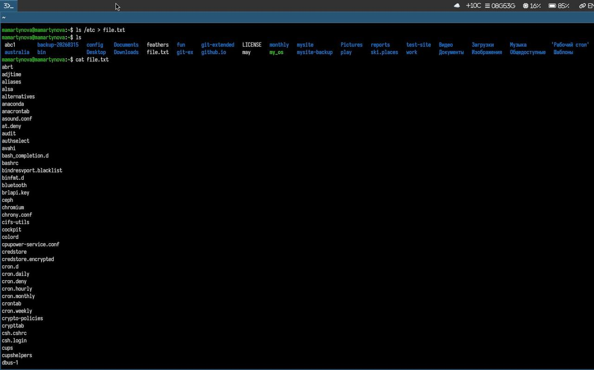
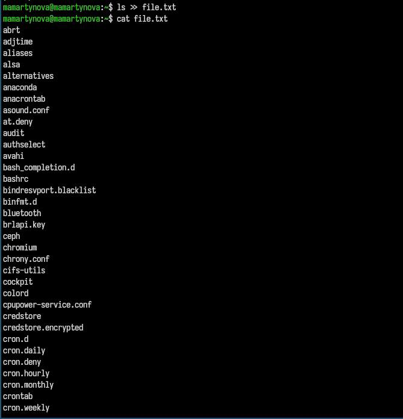
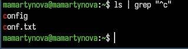
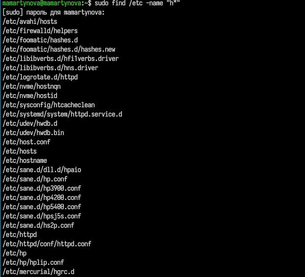
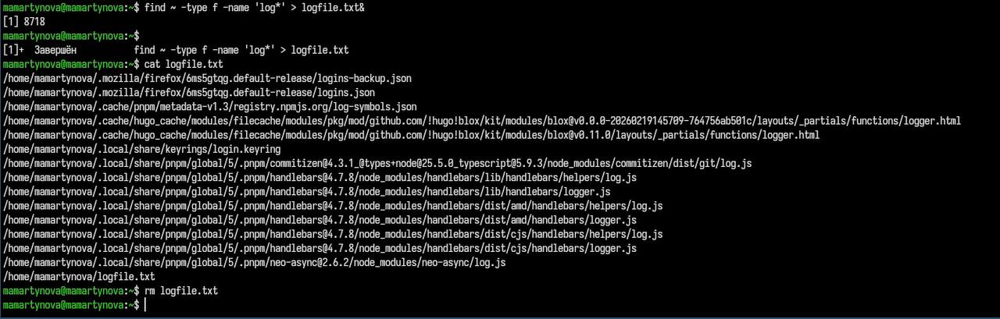
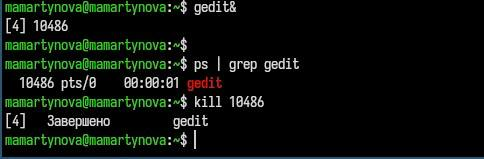
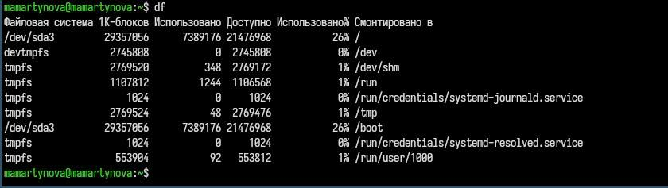

Освоение инструментов поиска файлов и фильтрации текстовых данных, а
также формирование практических навыков управления процессами и
задачами, контроля дискового пространства и обслуживания файловых
систем.
2. Задание
Осуществите вход в систему, используя соответствующее имя
пользователя.
Запишите в файл file.txt названия файлов, содержащихся в каталоге
/etc. Допи- шите в этот же файл названия файлов, содержащихся в вашем
домашнем каталоге.
Выведите имена всех файлов из file.txt, имеющих расширение .conf,
после чего запишите их в новый текстовой файл conf.txt.
Определите, какие файлы в вашем домашнем каталоге имеют имена,
начинавшиеся с символа c? Предложите несколько вариантов, как это
сделать.
Выведите на экран (по странично) имена файлов из каталога /etc,
начинающиеся с символа h.
Запустите в фоновом режиме процесс, который будет записывать в файл
~/logfile файлы, имена которых начинаются с log.
Удалите файл ~/logfile.
Запустите из консоли в фоновом режиме редактор gedit.
Определите идентификатор процесса gedit, используя команду ps,
конвейер и фильтр grep. Как ещё можно определить идентификатор
процесса?
Прочтите справку (man) команды kill, после чего используйте её для
завершения процесса gedit.
Выполните команды df и du, предварительно получив более подробную
информацию об этих командах, с помощью команды man.
Воспользовавшись справкой команды find, выведите имена всех
директорий, имею- щихся в вашем домашнем каталоге.
3. Теоретическое введение
В системе предусмотрено три стандартных потока ввода-вывода: stdin
(0) — ввод с клавиатуры, stdout (1) — вывод на консоль, stderr (2) —
вывод ошибок на консоль. Большинство консольных команд, таких как ls,
направляют результат в stdout. Потоки можно перенаправлять с помощью
символов >, >>, <, <<, а объединять команды в цепочки
— через конвейер (|). Команда find служит для поиска файлов по заданному
шаблону.
4. Выполнение лабораторной
работы
Записываю в файл содержимое каталога. (рис. 1)

Записывание в файл содержимого
каталога
Записываю в файл все файлы конфигурации.(рис. 2)

Записывание в файл всех файлов
конфигурации
Вывожу все файлы, начинающиеся на с. (рис. 3)

Все файла на “с”
Вывожу все файлы, начинаеющиеся на h.(рис. 4)

Все файла на “h”
Записываю все логи в файл.(рис. 5)

Записывние всех логов в файл
Открываю в фоне процесс и завершаю его. (рис. 6)

Открытие и завершение
процесса
Вывожу все директории домашнего каталога.(рис. 7)

Все директории домашнего
каталога
5. Выводы
В ходе работы были изучены инструменты поиска файлов и фильтрации
текстовых данных, а также получены практические навыки управления
процессами и задачами, контроля дискового пространства и обслуживания
файловых систем.